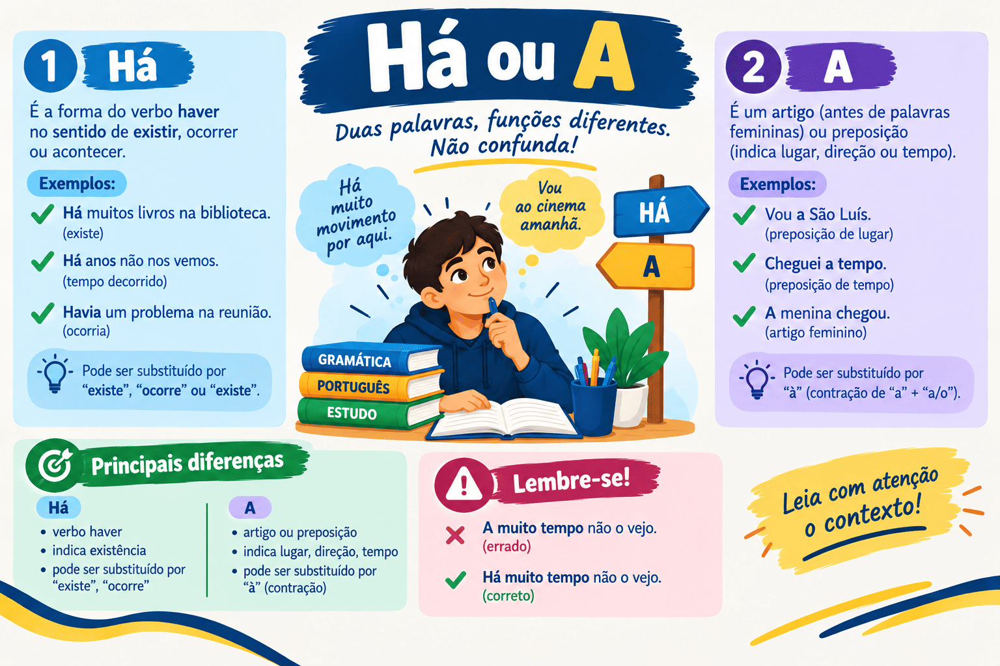

Há ou A: Quando Usar, Diferenças e Regras Práticas
A distinção entre há e a é uma das dúvidas mais recorrentes na escrita da Língua Portuguesa. Por possuírem pronúncia idêntica (são palavras homófonas), é comum que estudantes e candidatos hesitem no momento de escolher entre a forma do verbo haver e a preposição simples a.
Em avaliações formais como a redação do ENEM, o vestibular do PAES UEMA e concursos públicos em todo o país, a confusão entre esses dois termos figura entre os desvios gramaticais mais frequentes na Competência 1. Além de trocar a preposição pelo verbo, muitos participantes incorrem no vício do pleonasmo redundante (como na expressão *“há anos atrás”), o que denota insegurança no domínio da norma-padrão.
Neste guia completo do Mestre Kira, você aprenderá as regras definitivas de emprego do há (tempo decorrido e sentido de existir) e do a (tempo futuro e distância), dominará o macete do teste de substituição pelo verbo fazer, entenderá como eliminar redundâncias do seu texto e testará seus conhecimentos em um quiz de 10 questões com gabarito comentado.

Visão geral: Tempo Passado vs. Tempo Futuro e Distância
Para nunca mais hesitar entre há e a, basta identificar qual é a relação de tempo ou de espaço estabelecida na frase:
- Há (com H e acento agudo): é forma conjugada do verbo haver. É empregado para indicar tempo decorrido (passado) ou no sentido de existir;
- A (sem H e sem acento): é uma preposição. É empregado para indicar tempo futuro (que ainda vai ocorrer) ou distância física/espacial.
Regra prática imediata:
• Indica tempo que já passou? → Há (troque mentalmente por faz).
• Indica tempo que vai chegar ou distância? → A (troque mentalmente por daqui a).
Quando usar "HÁ" (Verbo Haver)
A forma há deve ser empregada em duas circunstâncias sintáticas primordiais:
1. Para indicar tempo decorrido (passado)
Quando a oração se refere a um período de tempo que já transcorreu, usa-se há. Nesses casos, o verbo haver é impessoal e equivale semanticamente ao verbo fazer indicando tempo cronológico:
Moro em São Luís há cerca de dez anos.
Teste de substituição: “Moro em São Luís faz cerca de dez anos.”
O edital do concurso foi publicado há duas semanas.
Teste de substituição: “O edital do concurso foi publicado faz duas semanas.”
2. No sentido de existir ou ocorrer
O verbo haver também atua com valor existencial, significando existir, acontecer ou estar presente. Como verbo impessoal, ele não possui sujeito e deve permanecer compulsoriamente na 3ª pessoa do singular:
Há muitos desafios estruturais na educação pública brasileira.
Equivale a: “Existem muitos desafios estruturais...” (o termo "muitos desafios" atua como objeto direto do verbo impessoal há).
Não há motivos para preocupação com o cronograma.
Equivale a: “Não existem motivos para preocupação...”
Quando usar "A" (Preposição)
A preposição a não tem relação com o verbo haver e desempenha papéis de conectivo gramatical. No contexto de medidas temporais e espaciais, usa-se a em dois casos principais:
1. Para indicar tempo futuro
Quando o enunciado faz referência a um intervalo de tempo que ainda vai transcorrer, ou seja, um fato projetado no futuro:
Os portões do local de prova fecharão daqui a quinze minutos.
Indica tempo futuro projetado à frente.
O resultado oficial do vestibular será divulgado a poucos dias do término do mês.
Refere-se a um momento temporal vindouro.
2. Para indicar distância física ou espacial
A preposição a é utilizada para exprimir a medida de afastamento entre dois pontos no espaço geográfico:
O polo universitário fica a duzentos metros da estação de ônibus.
Indica a distância métrica entre os dois locais.
O motorista avistou o pedestre a uma distância segura.
Expressa afastamento espacial.
Tempo Passado (Há)
“Concluí o ensino médio há três anos.”
O fato já aconteceu; o tempo decorreu (= faz três anos).
Tempo Futuro (A)
“Minha formatura acontecerá daqui a três anos.”
O fato ainda acontecerá no futuro.
O Perigo do Pleonasmo Vicioso: "HÁ ANOS ATRÁS"
Uma das falhas estilísticas mais combatidas na escrita formal é a expressão *“há anos atrás” (ou *“há muito tempo atrás”).
"Há" = já significa tempo decorrido no passado
"Atrás" = também expressa anterioridade no tempo
Usar os dois juntos = Pleonasmo vicioso / redundância desnecessária!
Para corrigir essa falha na redação, basta escolher uma das duas formas, eliminando a outra:
| Construção Redundante (Evite!) | Opção Correta 1 (com verbo haver) | Opção Correta 2 (com advérbio atrás) |
|---|---|---|
| *Iniciei os estudos há cinco anos atrás. | Iniciei os estudos há cinco anos. | Iniciei os estudos cinco anos atrás. |
| *O fato ocorreu há dias atrás. | O fato ocorreu há dias. | O fato ocorreu dias atrás. |
| *A lei foi sancionada há décadas atrás. | A lei foi sancionada há décadas. | A lei foi sancionada décadas atrás. |
Na redação do ENEM e PAES UEMA: Prefira sempre a construção com o verbo há (ex.: “Há décadas, o Brasil enfrenta...”). Ela confere mais sobriedade e concisão acadêmica ao texto do que o uso de “atrás”.
"Há quanto tempo" ou "A quanto tempo"?
Ao formular uma pergunta sobre a duração de um fato, a escolha entre há e a depende do sentido pretendido:
- Há quanto tempo: usa-se para perguntar sobre tempo decorrido no passado (ex.: “Há quanto tempo você estuda para esse concurso?” → equivale a faz quanto tempo);
- A quanto tempo: raramente empregado isolado, pode surgir em construções futuras projetadas (ex.: “Daqui a quanto tempo começará a cerimônia?”).
Quadro Comparativo: Testes Práticos
| Forma | Função Gramatical | Sentido Transmitido | Teste de Substituição | Exemplo Canônico |
|---|---|---|---|---|
| Há | Verbo impessoal (haver) | Tempo decorrido (passado) | Troque por faz | Cheguei há pouco tempo. (= faz pouco tempo) |
| Há | Verbo impessoal (haver) | Existência / Ocorrência | Troque por existe / existem | Há vagas disponíveis. (= Existem vagas) |
| A | Preposição simples | Tempo futuro | Troque por daqui a | Sairemos daqui a pouco. |
| A | Preposição simples | Distância espacial | Indica afastamento métrico | A praia fica a dois quilômetros. |
Passo a passo para não errar em provas
-
A frase se refere a tempo ou distância?
- Se indicar distância espacial em metros ou quilômetros → Use a (ex.: Estamos a cem metros).
- Se indicar tempo, avance para o passo 2.
-
O tempo já passou ou ainda vai acontecer?
- O tempo já passou? Faça o teste mental: dá para trocar por faz? Se sim → Use há (ex.: Trabalho aqui há três anos = faz três anos).
- O tempo ainda vai acontecer no futuro? Dá para trocar por daqui a? Se sim → Use a (ex.: Retornarei a duas semanas = daqui a duas semanas).
-
A palavra tem sentido de "existir"?
- Dá para trocar por existe ou existem? Se sim → Use há (ex.: Há soluções possíveis = Existem soluções).
Quiz — Há ou A
Questão 1 — Assinale a frase em que o uso de “há” e “a” está rigorosamente CORRETO:
Questão 2 — Em “A escola fica ______ duzentos metros daqui”, a lacuna deve ser preenchida por:
Questão 3 — “Não nos encontramos ______ muito tempo, mas nos veremos daqui ______ uma semana”. As lacunas são preenchidas por:
Questão 4 — A frase “O pesquisador chegou há dez anos atrás no Maranhão” apresenta desvio gramatical porque:
Questão 5 — Em “______ muitos candidatos aguardando o início da prova”, a forma correta é:
Questão 6 — Assinale a opção que preenche adequadamente a pergunta: “______ quanto tempo você reside nesta cidade?”:
Questão 7 — Em “O ônibus partirá daqui ______ cinco minutos”, emprega-se a preposição “a” porque:
Questão 8 — Qual das alternativas abaixo está plenamente de acordo com a norma-padrão?
Questão 9 — “O museu fica ______ poucos passos da praça matriz”. A palavra correta é:
Questão 10 — Em “______ dias em que não ______ paciência para discussões inúteis”, as lacunas devem ser completadas por:
Resumo sobre o uso de há e a
- Há (verbo haver): empregado para indicar tempo decorrido no passado (troque por faz) ou no sentido de existir.
- A (preposição): empregado para indicar tempo futuro (troque por daqui a) ou distância física/espacial.
- Pleonasmo vicioso: nunca use *“há anos atrás”. Escolha entre há cinco anos ou cinco anos atrás.
- Na redação do ENEM e PAES UEMA, prefira a construção com há para demonstrar domínio formal de vocabulário.
- Com valor de existir, o verbo há é impessoal e fica fixo no singular (ex.: Há muitas soluções).
- Para distâncias (metros, quilômetros, passos), usa-se sempre a preposição a (ex.: A casa fica a dez minutos daqui).
Conclusão
A distinção entre há e a é uma das competências básicas que diferenciam uma escrita amadora de um texto maduro e rigoroso. A aplicação do macete de substituição pelo verbo fazer (para o passado) e a observação de referências futuras ou métricas resolvem todas as dúvidas de forma imediata.
Ao extirpar o pleonasmo “há... atrás” e utilizar a forma adequada em cada período, você assegura a clareza de suas orações e protege a sua nota nas competências gramaticais do ENEM, do PAES UEMA e nos mais disputados concursos públicos.
Perguntas frequentes sobre há e a
Qual a diferença básica entre "há" e "a"?
“Há” é uma forma do verbo haver usada para indicar tempo que já passou (ex.: “cheguei há pouco”) ou com sentido de existir (ex.: “há problemas”). “A” é uma preposição usada para indicar tempo futuro (ex.: “chegarei daqui a pouco”) ou distância espacial (ex.: “fica a dois metros”).
Por que "há três anos atrás" está errado?
Porque é um pleonasmo vicioso (redundância). Tanto o verbo há quanto a palavra atrás indicam tempo passado decorrido. O correto é usar apenas há três anos ou três anos atrás.
Como saber se devo usar "há" ou "a" em relação ao tempo?
Tente substituir a palavra por faz. Se a frase continuar com sentido correto, use há (ex.: “Estudo há três horas” = “Estudo faz três horas”). Se o tempo for futuro e admitir daqui a, use a (ex.: “A prova será daqui a duas semanas”).
Escreve-se "moro a dois quilômetros" ou "moro há dois quilômetros"?
O correto é moro a dois quilômetros, pois a frase indica distância espacial entre dois pontos geográficos, exigindo a preposição simples a.
Diz-se "há quanto tempo" ou "a quanto tempo"?
Para perguntar sobre o tempo decorrido no passado, o correto é há quanto tempo (ex.: “Há quanto tempo você estuda para o vestibular?” → equivale a faz quanto tempo).
Conteúdos relacionados
- Termos Integrantes e Acessórios da Oração
- Orações Coordenadas e Subordinadas: como reconhecer e classificar
- Conjunções da Língua Portuguesa: o que são, tipos, usos e exemplos explicados
- Locuções Adverbiais: o que são, tipos e exemplos
- Sintaxe: estrutura da oração e relações entre as palavras
- Interpretação e Produção Textual
- Gramática da Língua Portuguesa: Guia Completo
- Conteúdos de Gramática — Página 2
- Conteúdos de Gramática — Página 3
- Conteúdos de Gramática — Página 4
Referências bibliográficas
- BECHARA, Evanildo. Moderna Gramática Portuguesa. 37. ed. Rio de Janeiro: Nova Fronteira, 2009.
- CEGALLA, Domingos Paschoal. Novíssima Gramática da Língua Portuguesa. 48. ed. São Paulo: Companhia Editora Nacional, 2008.
- CUNHA, Celso; CINTRA, Lindley. Nova Gramática do Português Contemporâneo. 6. ed. Rio de Janeiro: Lexikon, 2013.
- GARCIA, Othon Moacyr. Comunicação em Prosa Moderna. 27. ed. Rio de Janeiro: Editora FGV, 2010.
- ROCHA LIMA, Carlos Henrique da. Gramática Normativa da Língua Portuguesa. 49. ed. Rio de Janeiro: José Olympio, 2011.
Explore Outros Conteúdos
Continue seus estudos acessando outras seções do site Mestre Kira: